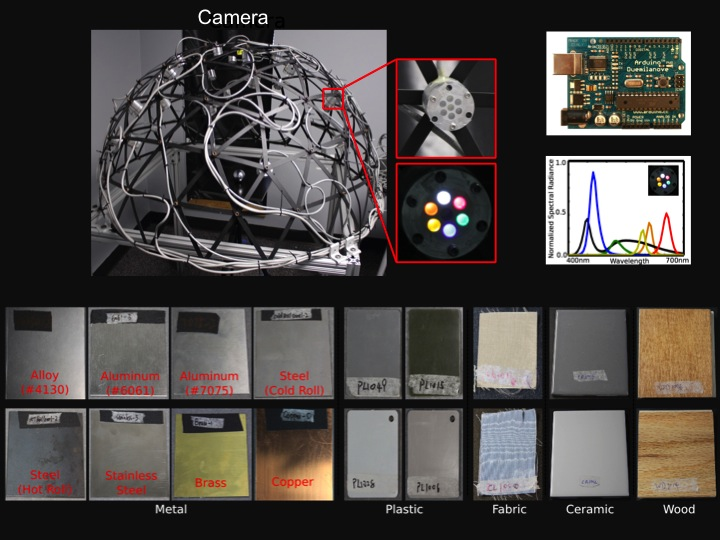
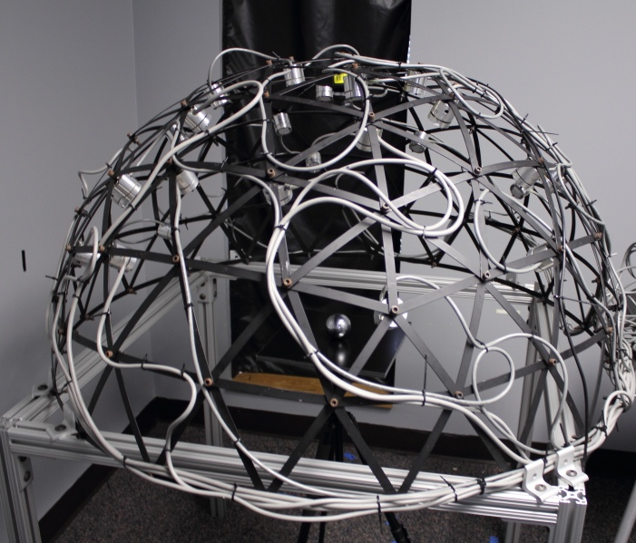
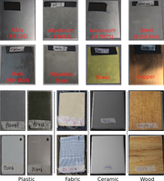
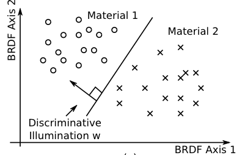
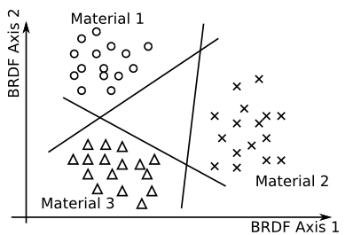
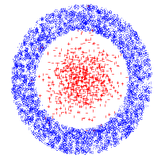
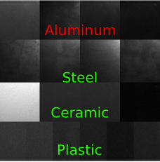
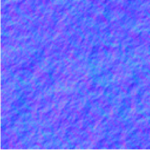
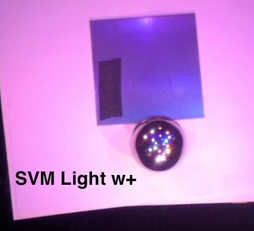

Classifying Raw Materials with Discriminative Illumination |
|  | |
Classifying raw, unpainted materials --- metal, plastic, ceramic,
fabric, etc. --- is an important yet challenging task for computer
vision. Previous works measure subsets of surface spectral
reflectance as features for classification. However, acquiring the
full surface reflectance is time-consuming and error-prone. In this
project, we propose to use coded illumination to directly measure
discriminative features for material classification. Optimal
illumination patterns---which we call ``discriminative
illumination"---are learned from training samples, after projecting
to which, the spectral reflectance of different materials are
maximally separated. This projection is automatically realized by the
integration of incident light for surface reflection. While a single
discriminative illumination is capable of linear, two-class
classification, we show that multiple discriminative illuminations
can be used for nonlinear and multi-class classification. We also
show theoretically the proposed method has higher signal-to-noise
ratio than previous methods due to light multiplexing. Finally, we
construct a LED-based multi-spectral dome and use the discriminative
illumination method for classifying a variety of raw materials,
including metal (aluminum, alloy, steel, stainless steel, brass and
copper), plastic, ceramic, fabric and wood. Experimental results
demonstrate the effectiveness of the proposed method. |
Publications
Jinwei Gu and Chao Liu. Discrminative Illumination: Per-Pixel
Classification of Raw Materials based Optimal Projections of
Spectral BRDFs. CVPR 2012.
Jinwei Gu and Chao Liu.Supplementary
Document (with proof and other experimental details).
|
Images
|  |
|
A LED-based Multispectral Dome Light:
We design and build a LED-based
multi-spectral dome light for classifying
raw materials based on optimal projections of their spectral BRDFs. The
dome has 25 LED clusters. Each
LED cluster has six color LEDs which can be weighted individually
to create a desired spectrum. They are driven with Arduino boards
with PWM controls. We learn optimal illumination patterns from training samples, after
projecting to which the spectral BRDFs of different materials can be
maximally separated.
|
|  |
|
Database of Raw Materials:
We focus on unpainted, raw materials which are classified
based on their surface spectral BRDFs. The database includes metal,
plastic, fabric, ceramic, and wood. Within the class of metal, we
have samples of alloy (4130), aluminum (5052, 6061, 2024,
7075), steel (cold roll and hot roll), stainless steel, brass, and
copper. In total, there are 100 sample plates. The measured
spatially-varying spectral BRDFs can be downloaded at
Here.
|
|  |
|
Discriminative illumination as a physically-based
linear classifier:
Our core idea is to use coded illumination as a
classifier. (a) A schematic diagram in which coded illumination
acts as a linear classifier, after projecting to which the spectral
BRDFs of different materials are maximally separated. (b) An example
of aluminum-vs-alloy classification. The image is captured by one of
the 150 LEDs of the dome which yields the best classification
performance on training data. Its classification rate on testing
data is 41\%. (c) We train a linear kernel SVM classifier from the
same training data, with the classification rate of 95% on the
testing data. The bar graph shows the learned SVM light, w, where
the 25 bar groups correspond to the 25 LED clusters and the six bars
within each group correspond to the six LEDs. The vertical axis
shows the relative brightness of each LED. Since the SVM light,
w, has negative
values, we implement it as the difference of two nonnegative
vectors. (d) and (e) show the corresponding light
patterns on the top view of the LED dome. The colors of the nodes show
the spectra of the LED clusters. (f) and (g) show the
corresponding captured images. (h) shows the difference of (f) and
(g), which is used for classification. (i) is the classification
result, shown as a binary image.
|
|  |
|
Extension to multi-class classification:
Multiple discriminative
illumination can be used for multi-class classification.
We show an example of fabric-vs-ceramic-vs-plastic classification
using the one-vs-all strategy. (b) The captured image under one of the 150 LEDs. (c) The learned
three SVM light vectors. (d) To handle negative values, we implement
the three SVM lights as four nonnegative light patterns. (e) shows
one of the four captured images under the SVM lights. (f) the
classification result. The classification rate is 94%. (g) In
comparison, if we only select three LEDs for classification, we can
at most have 62% classification rate.
|
|  |
|
From linear to nonlinear classifier using multiple
discriminative illuminations:
(a) A cascade classifier for the detection problem, which minimizes false positive
rate by adding more stages while maintaining a
small given false negative rate for each stage. (b) A toy
nonlinear example of detecting red + from blue circles. (c) Classification
results of the cascade classifier in which each stage
is a linear classifier. Top: the classification results
on the training samples. {Bottom: the classification
boundaries.
|
|  |
|
Aluminum detection using a cascade classifier:
We
train a four-stage cascade classifier to detect aluminum from three other
materials (ie, steel, ceramic, plastic). (a) captured image under
one of the 150 LEDs. (b)(c)(d)(e) show the learned classifier and
corresponding classification result (as a binary image) for each
stage. A linear-kernel SVM classifier is used for each stage. With
the false negative rate for each stage to be 2%, the
four-stage cascade classifier has false negative rate of 4.2% and
false positive rate of 0.07%. In comparison, if we train a
single linear light for this problem with the same false
negative rate, the false positive rate is 6%.
|
|  |
|
Deal with surface normal variation:
We deal with surface normal
variations by augmenting the training datasets with rotations of
BRDF vectors. This works for small variations (within +/- 10
degrees). This picture shows a simulation result. (a)(b) Renderings of two BRDFs under natural lighting. (c) A
sample with random surface normal ($\pm 10$ degrees variation in the
tilt angle, color coded). (d) The
distribution of the two BRDFs on the sample. (e) Measured image under a point light, with which it is
difficult to separate the two BRDFs. (f) Measured image under a
discriminative illumination, with which we can separate the
two BRDFs more accurately.
|
|
Video
If you are having trouble viewing these .mp4 videos in your browser, please save them to your computer first (by right-clicking and choosing "Save Target As..."), and then open them.
|  |
|
Supplementary Video:
This video show the dome light in action. Here are several more videos:
|
|
Slides
CVPR 2012 Oral Presentation (to come soon)
ICCP 2012 Poster (PDF)
|
Software
Database of Spectral BRDFs of Raw
Materials The database
includes 100 sample plates covering five material catoegories. For
each sample plate, there are 150 HDR images captured, corresponding
to the 150 LEDs.
|
Material Classification with BRDF Slices
Optimal Illumination for Material Classification
|
|
{kind=link}
{kind=link}
{kind=link}
{kind=link}
{kind=link}
{kind=link}
{kind=link}